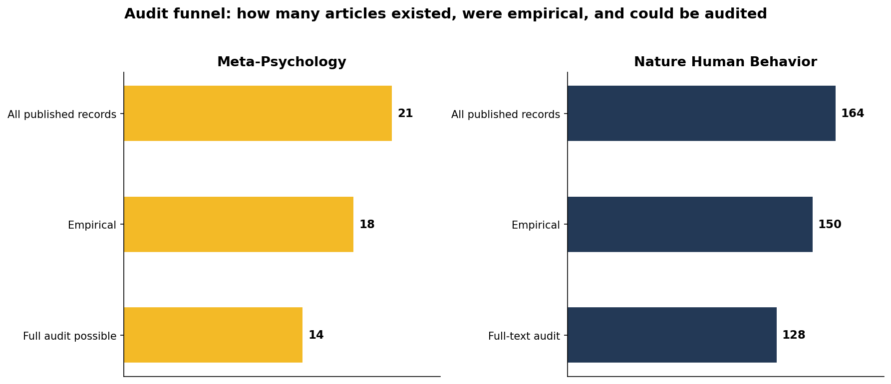
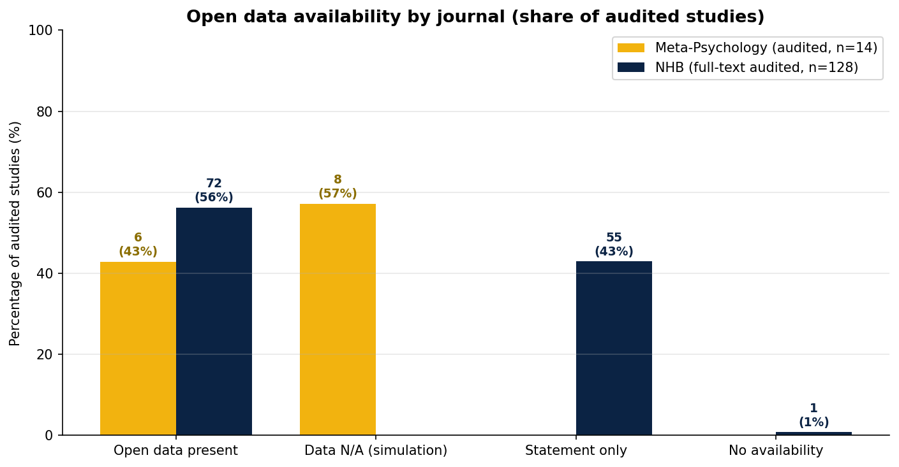
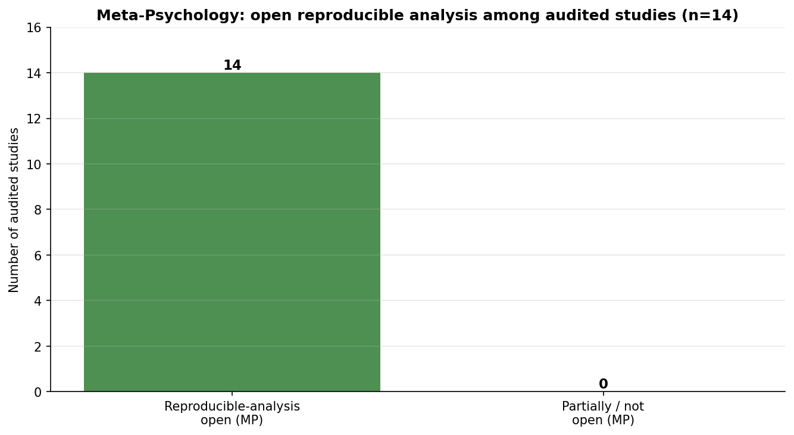
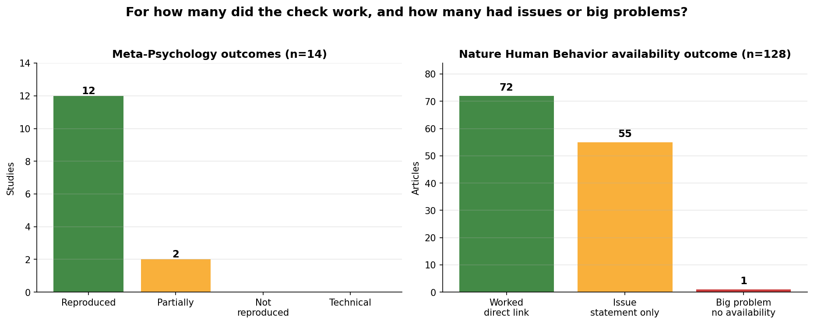
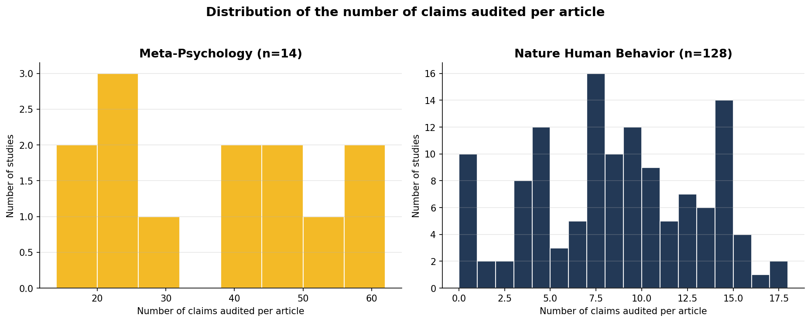

ReproAI Audit Project · anomalyco/opencode · Audit date: 2026-09-15
Scientific transparency is essential for cumulative knowledge, yet publishing models differ in how they incentivise the open sharing of data, materials, and analysis code. We compared the reproducibility infrastructure of two psychology journals published in 2019 and 2020: Meta-Psychology, a scholar-led, community-owned open-access journal that mandates open data and code and conducts reproducibility reviews, and Nature Human Behavior (NHB), a commercial publisher-owned journal (Springer Nature) that requires data-availability statements but gates full text behind a subscription. For Meta-Psychology we drew on 14 computational reproduction audits covering Volumes 3 (2019) and 4 (2020); every audit—claim extraction, code re-execution, and verdict—was re-performed and authored by the DeepSeek V4 Flash large language model served through uniGPT (Radas, Risse, & Vogl, 2026). For NHB we audited the full text of 128 empirical articles for which a PDF could be retrieved (of 150 published; the remaining 22 could not be included because full text was behind the subscription paywall). Of 14 Meta-Psychology studies audited, 12 reproduced near-exactly, 2 partially reproduced, 0 did not reproduce, and 0 failed for technical reasons. Across the 128 audited NHB articles, 72 (56%) exposed direct, machine-downloadable data/code links, 55 (43%) supplied availability statements without direct links, and 1 gave no statement. We conclude that the scholar-led model currently yields stronger, more transparent reproducibility practices than the commercial model. This report was drafted by a large language model; all quantitative claims derive from the underlying audit records.
Keywords: reproducibility, open science, open data, open code, publishing, Meta-Psychology, Nature Human Behavior
Filter the full set of audited articles below. The chart and table update live. Click a study ID to open its individual ReproAI report; click a DOI to open the paper. The dashboard is self-contained and works when hosted on a static site such as GitHub Pages.
| Study | Title | DOI | Severity | Open data | Open code / reproducible analysis | Claims | Outcome | Key caveat |
|---|
Column guide. Study: click to open the individual ReproAI report for that article. Severity: P1 = critical, P2 = substantial, P3 = minor. Open data: for Meta-Psychology, the journal’s open-data badge; for NHB, the data-availability outcome (direct link = Yes/statement only/None). Open code / reproducible analysis: whether the analysis code needed to re-execute the results is openly available; for Meta-Psychology this is the open-reproducibility badge; for NHB, results were checked against the reported numbers in the PDF and code availability is captured in the Open data column, so this is marked n/a. Outcome: green = reproduced (MP) or direct data/code link (NHB); amber = partially reproduced (MP) or statement-only (NHB); red = not reproduced (MP) or no availability (NHB); orange = technical failure (MP).
The parallel PRISMA-style flows below show how the set of audited studies was determined for each journal. Both begin at the journal, restrict to 2019 and 2020, apply exclusions (non-empirical records, then records for which the data/code needed to re-execute the analysis was not available, or the full text could not be retrieved), and end with the reduced sample in which an AI checked the reproduced results against the reported results. Both journals are young: each launched in 2017, so the 2019 and 2020 audits cover their third and fourth volumes, respectively.
PRISMA-style flow. For NHB, 22 empirical articles are not included because the journal’s subscription paywall prevented PDF retrieval; these received no full-text audit and are excluded from this report. For Meta-Psychology, the full text of all records is openly available; 4 records were excluded because they are non-empirical and/or the data and code needed to re-execute the analysis were not available (the reproduction audit was therefore not feasible), so the remaining 14 were audited.
ReproAI audits combine manuscript claim extraction, data/code-availability assessment, and—where the data and code are available—independent re-execution or verification against the reported numbers. Severity is graded P1 (critical) to P3 (minor). All audits in this report were re-performed and authored entirely by the DeepSeek V4 Flash large language model, served through the on-premises uniGPT platform (Radas et al., 2026), running within the ReproAI pipeline on the opencode engine. For Meta-Psychology, 14 audits re-ran shipped code and verified results against the manuscript. For NHB, audits ran against the PDF’s reported numbers and recorded data/code availability for the 128 articles whose full text could be retrieved.
This document is an output of a large language model (DeepSeek V4 Flash, served via uniGPT, running on the anomalyco/opencode engine). The prose, figures, dashboard, HTML, and every ReproAI verdict in the individual audit reports were generated automatically by that model.
We first establish, journal by journal, how many articles existed, how many were empirical, and how many could be audited (Figure 1). Meta-Psychology published 21 records across Volumes 3 and 4; 14 of these could be audited because their full text and the underlying data and code are openly available, while 4 records were excluded as non-empirical or because the data/code needed for a reproduction audit were not available. NHB published 164 records; 150 were empirical and, of these, the full text of 128 (85%) could be retrieved and audited, while the remaining 22 could not be included because full text was unavailable.

Figure 1. Audit funnel by journal: how many articles were published, how many were empirical, and how many could be audited.
Open data and reproducible analysis are reported separately because they measure different things (Figure 2 = open data; Figure 3 = reproducible analysis). Among 14 audited Meta-Psychology studies, 6 carried explicit open-data badges; the remaining studies were simulations for which raw data are not applicable. Among the 128 audited NHB articles, 72 (56%) exposed a direct, machine-downloadable data/code link, 55 (43%) supplied an availability statement without a direct link, and 1 gave no statement.

Figure 2. Open data availability by journal, shown as the share (percentage) of audited studies within each journal, with the exact count in parentheses at each bar tip — this makes the two journals comparable despite the small Meta-Psychology corpus. Note that several Meta-Psychology studies are simulations in which raw data are not applicable, so no-data should not be read as a transparency failure.

Figure 3. Open reproducible analysis among the Meta-Psychology studies that were audited (n = 14). This is shown separately from open data because a study may open its data but not its analysis, or vice versa.
For Meta-Psychology, where a genuine computational reproduction was possible, 12 studies reproduced near-exactly and 2 reproduced only partially; 0 did not reproduce and 0 hit technical blockers. These are genuinely re-ran analyses, so “reproduced” is a strong certification. For NHB, the audit established data/code availability rather than re-execution: 72 offered a working direct link (the check usable), 55 offered only a statement (usable data not directly reachable — an issue), and 1 offered no availability at all (a bigger problem). Figure 4 contrasts these two outcome schemes.

Figure 4. Outcomes of the audit for each journal, shown as the share (percentage) of audited studies within each journal with the exact count at each bar tip: for Meta-Psychology, how many reproductions worked (reproduced), partially reproduced, or failed/technical; for NHB, how many articles gave a direct working link, a statement only, or no availability. Because the Meta-Psychology corpus is small (n = 14), percentages are reported alongside exact counts so the two are not misleadingly compared.
The two audits differ in depth: Meta-Psychology reproductions re-ran shipped code and therefore audited far more claims per article (median 41.5; range 16–65), whereas the NHB checks verified the key reported numbers against the PDF (median 8.0; range 0–17). Figure 5 shows the distribution of the number of claims audited per article for each journal.

Figure 5. Histograms of the number of claims audited per article, for Meta-Psychology (left) and Nature Human Behavior (right). The Meta-Psychology audits re-ran full analyses and consequently audited more claims per article than the NHB verifications.
Traffic-light colour: green = reproduced (MP) or direct data/code link (NHB); amber = partially reproduced (MP) or statement-only (NHB); red = not reproduced (MP) or no availability (NHB); orange = technical failure (MP). The full list of all included studies, with every field and these colour codes, is available interactively in the dashboard at the top of this report.
The scholar-led journal in our sample (Meta-Psychology) performs well on the transparency metrics we measured. Its editorial policies couple publication to the deposition of data and code, and its reproducibility reviews—which we re-performed here with independent code re-execution—publicly certify what does and does not reproduce. Of the fourteen re-audited articles, twelve reproduced near-exactly and two reproduced only partially, underscoring that the mandated openness plus re-execution (here by a deep LLM) makes verification concrete, while confirming that genuinely independent re-execution remains the gold standard.
The commercial journal in our sample (NHB) nearly always meets the letter of its data-availability requirement, but 43% of audited articles stop at a statement, and only 56% expose direct, machine-downloadable links. Because the full text is paywalled, only 128 of the 150 NHB empirical articles could be checked against the actual PDF; the remaining 22 could not be included. Full-text access is a prerequisite for genuine verification, and its absence is itself a transparency cost.
Within this comparison, the scholar-led journal in our sample sets a higher and more verifiable bar for reproducibility than the commercial journal in our sample. We do not claim that this generalizes to all scholarly-led or all commercially published journals: the two here represent only one instance of each publishing model, and future research should examine whether these findings extend to other journals of each type.
For researchers publishing meta-psychological findings, Meta-Psychology and NHB exemplify two ends of a quality–quantity trade-off. Meta-Psychology emphasises quality: it publishes fewer articles, but with openly available data and code that are independently audited. NHB emphasises quantity: it publishes many articles, but with more limited reproducibility and verification because full text and, often, data are not openly reachable. We caution that the journals publish different content types, the Meta-Psychology corpus is small, and the Meta-Psychology outcome is a reproduction certification whereas the NHB outcome is an availability audit, so the two are not directly commensurable.
Because both journals are young, their 2019 and 2020 volumes fall within their first few years of publication. Extending this audit to more recent years would be valuable, as the reproducibility-relevant policies of each journal — and, for NHB, the degree to which data-availability statements translate into direct, working links — may have changed over time. However, the accompanying citation analyses (Study 2) are less informative for recent work: newly published articles have had comparatively little time to accrue citations, so citation counts from the latest volumes should be interpreted with particular caution or revisited once those articles have matured.
This report was written entirely by a large language model (DeepSeek V4 Flash, served via the on-premises uniGPT platform within the ReproAI pipeline on the anomalyco/opencode engine). The model was prompted and supervised by Lukas Röseler. Data collection, figures, the interactive dashboard, HTML composition, and every individual ReproAI verdict and report were generated automatically by that model. No funding was received; the authors of audited articles were not involved in and are not responsible for this audit.
Lukas Röseler is the co-founder editor of a scholarly-led journal and a proponent of Diamond Open Access. Had the results been in favour of NHB over Meta-Psychology, he would not have made them public. The audits, data, and reports are openly available so that these interests can be weighed against the evidence by any reader.
All data, figures, scripts, and individual ReproAI audit reports underlying this comparison are openly available in the project repository at https://github.com/LukasRoeseler/reprochecks. The individual audit reports for every included study are hosted on GitHub Pages (see the “Study” links in the interactive dashboard above).
For transparency, this subsection summarises the instructions (the general prompt together with the revisions) under which this report was generated and revised by the model. It is a living summary and is kept updated as the manuscript evolves.
Munafò, M. R., Nosek, B. A., Bishop, D. V. M., Button, K. S., Chambers, C. D., Percie du Sert, N., Simnson, U., Wagenmakers, E.-J., Ware, J. J., & Ioannidis, J. P. A. (2017). A manifesto for reproducible science. Nature Human Behaviour, 1, 0021. https://doi.org/10.1038/s41562-016-0021
Open Science Collaboration. (2015). Estimating the reproducibility of psychological science. Science, 349(6251), aac4716. https://doi.org/10.1126/science.aac4716
Sassenberg, K., & Ditrich, L. (2019). Research in social psychology changed between 2011 and 2016: Larger sample sizes, stronger biasing influences. Frontiers in Psychology, 10, 2708. https://doi.org/10.3389/fpsyg.2019.02708
Radas, J., Risse, B., & Vogl, R. (2026). UniGPT revisited: From a simple chatbot to an API-first AI platform—Two years of on-premises LLM operations. In L. Desnos, C. Diaz, J. Mincer-Daszkiewicz, L. Merakos, R. Vogl, S. McLellan, & U. Lucke (Eds.), Proceedings of EUNIS 2026 Annual Congress (EPiC Series in Computing, Vol. 109, pp. 96–107). EasyChair. https://doi.org/10.29007/4rq8
Xu, Y., & Yang, L. Y. (2026). Scaling Reproducibility: An AI-Assisted Workflow for Large-Scale Replication and Reanalysis. arXiv preprint arXiv:2602.16733. https://arxiv.org/abs/2602.16733
Wallrich, L., Röseler, L., Hartmann, H., Ashcroft-Jones, S., Doetsch, C., Kaiser, L., Schüller, S. M., Aldoh, A., Behbood, H., Elsherif, M. M., Klett, N., Krapp, J., Liu, M., Pavlović, Z., Pennington, C. R., Schütz, A., Seida, C., Siziva, K., Skvortsova, A., Aczel, B., Adelina, N., Agostini, V., Al-Hoorie, A. H., Alarie, S., Albayrak-Aydemir, N., Alzahawi, S., Anvari, F., Arriaga, P., Baker, B. J., Barth, C. L., Bauer, D. J., Becker, R., Beitner, J., Belaus, A., Bhatt, H., Bhogal, J., Boyce, V., Breemer, L., Brick, C., Brohmer, H., Brummernhenrich, B., Budd, E., Butler, A., Casula, A., Chandrashekar, S. P., Chen, S., Chung, K. L., Cockcroft, J. P., Crowe, P., Cummins, J., Daniel, A., Deane, O., Deressa, T. K., Dienlin, T., Diveica, V., Draguns, A., Dumbalska, T., Efendic, E., El Halabi, M., Enright, S., Evans, T. R., Exner, A., Farrar, B. G., Feldman, G., Fillon, A., Floyd, J., Fontana Vieira, F., Frese, J., Förster, N., Gattie, M. C., Gemmecke, C., Genschow, O., Giannouli, V., Gjoneska, B., Gnambs, T., Gourdon-Kanhukamwe, A., Graham, C. J., Greshake Tzovaras, B., Guay, S., Hausenloy, J., Haviva, C., Henderson, E. L., Herderich, A., Hilbert, L., Holgado, D., Hussey, I., Höfer, L., Ilchovska, Z. G., Imada, H., Imwene, P., Izydorczak, K., Jaubert, S., Jeftić, A., Kalandadze, T., Kamermans, K., Karhulahti, V., Kasseckert, L., Kastrinogiannis, A., Klingelhöfer-Jens, M., Kocalar, H. E., Koppel, L., Koppold, A., Korbmacher, M., Kujawa, Z., Kulke, L., Kumar, P., Kuper, N., LaPlume, A. A., Lach, R., Lecuona, O., Lee, J., Leech, G., Leksina, E., Lin, C., Liu, Y., Lohkamp, F., Lou, N. M., Lynott, D., Mackinnon, S., Maier, M., Maiya, S., Makel, M. C., Manrique-Castano, D., Manríquez-Robles, D., Mathes, L., McSharry, D., Meidenbauer, K. L., Meier, M., Micheli, L., Miller, T., Montefinese, M., Moreau, D., Moser, N., Mrkva, K., Murphy, J., Muthu, J., Narkar, N., Nemcova, M., Nádvorník, J., O'Mahoney, R., O'Mahony, A., Oberholzer, Y., Oomen, D., Osano, M., Otstavnov, N., Packheiser, J., Pandey, S., Panton, H., Papenmeier, F., Parsons, S., Paruzel-Czachura, M., Pavlov, Y. G., Pittelkow, M., Plomp, W., Plonski, P. E., Pravednikov, A., Pronizius, E., Pua, A., Pypno-Blajda, K., Rausch, M., Raza, H., Reason, R., Rebholz, T. R., Resulbegoviq, H., Richert, E., Ross, R. M., Russo, S., Röer, J. P., Sandkühler, J. F., Schmidt, K., Sempere, N., Sobolak, R., Sperl, M. F., Stevens, J. R., Stogianni, M., Szekely, R., Tan, A. W., Thürmer, J. L., Tiulpakova, M., Tomczak, J., Tołopiło, A., Tunca, B., Vanpaemel, W., Vaughn, L. A., Verheyen, S., Vineyard, G. H., Weber, L., Weinberg, A., Wingen, S., Wolska, J., Yeung, S. K., Younssi, M., Zaneva, M., Zimmermann, D., & Azevedo, F. (2026). FORRT Library of Replication Attempts (FLoRA) [Data set]. OSF. https://doi.org/10.17605/OSF.IO/9R62X (*Wallrich, L., & Röseler, L. contributed equally to this work.)
Brand, C. O., Ounsley, J. P., Post, D. J. V. d., & Morgan, T. J. H. (2019). Cumulative Science via Bayesian Posterior Passing. Meta-Psychology, 3. https://doi.org/10.15626/MP.2017.840
Leeuw, J. D. (2019). Similar event-related potentials to structural violations in music and language. Meta-Psychology, 3. https://doi.org/10.15626/MP.2018.1481
Witt, J. K. (2019). Insights into Criteria for Statistical Significance from Signal Detection Analysis. Meta-Psychology, 3. https://doi.org/10.15626/MP.2018.871
Williams, D., & Bürkner, P.C. (2020). Coding Errors Lead to Unsupported Conclusions. Meta-Psychology, 4. https://doi.org/10.15626/MP.2018.872
Brunner, J., & Schimmack, U. (2020). Estimating Population Mean Power Under Conditions of Heterogeneity and Selection for Significance. Meta-Psychology, 4. https://doi.org/10.15626/MP.2018.874
Kuper, N., & Bott, A. (2019). Has the evidence for moral licensing been inflated by publication bias?. Meta-Psychology, 3. https://doi.org/10.15626/MP.2018.878
Imhoff, R., & Messer, M. (2019). In search of Experimental Evidence for Secondary Antisemitism. Meta-Psychology, 3. https://doi.org/10.15626/MP.2018.880
Niemeyer, H., Aert, R. C.M. V., Schmid, S., Uelsmann, D., Knaevelsrud, C., & Schulte-Herbrueggen, O. (2020). Publication Bias in Meta-Analyses of Posttraumatic Stress Disorder Interventions. Meta-Psychology, 4. https://doi.org/10.15626/MP.2018.884
Witt, J. K. (2019). Graph Construction. Meta-Psychology, 3. https://doi.org/10.15626/MP.2018.895
Haverkamp, N., & Beauducel, A. (2019). Differences of Type I error rates for ANOVA and Multilevel-Linear-Models using SAS and SPSS for repeated measures designs. Meta-Psychology, 3. https://doi.org/10.15626/MP.2018.898
Lakens, D., & Delacre, M. (2020). Equivalence Testing and the Second Generation P-Value. Meta-Psychology, 4. https://doi.org/10.15626/MP.2018.933
Rousselet, G. A., & Wilcox, R. R. (2020). Reaction Times and other Skewed Distributions. Meta-Psychology, 4. https://doi.org/10.15626/MP.2019.1630
Hunter, A., Beribisky, N., Farmus, L., & Cribbie, R. A. (2020). Multiplicity Control vs Replication. Meta-Psychology, 4. https://doi.org/10.15626/MP.2019.1992
Thunell, E., & Francis, G. (2020). Excess success in “Don’t count calorie labeling out: Calorie counts on the left side of menu items lead to lower calorie food choices”. Meta-Psychology, 4. https://doi.org/10.15626/MP.2019.2266
Kristal, A. S., & Whillans, A. V. (2019). What we can learn from five naturalistic field experiments that failed to shift commuter behaviour. Nature Human Behavior, 4, 169-176. https://doi.org/10.1038/s41562-019-0795-z
Gagnepain, P., Vallée, T., Heiden, S., Decorde, M., Gauvain, J.L., Laurent, A., Klein-Peschanski, C., Viader, F., Peschanski, D., & Eustache, F. (2019). Collective memory shapes the organization of individual memories in the medial prefrontal cortex. Nature Human Behavior, 4, 189-200. https://doi.org/10.1038/s41562-019-0779-z
Vliert, E. V. d. (2019). The global ecology of differentiation between us and them. Nature Human Behavior, 4, 270-278. https://doi.org/10.1038/s41562-019-0783-3
Earle, M., & Hodson, G. (2019). Questioning white losses and anti-white discrimination in the United States. Nature Human Behavior, 4, 160-168. https://doi.org/10.1038/s41562-019-0777-1
Oh, D., Shafir, E., & Todorov, A. (2019). Economic status cues from clothes affect perceived competence from faces. Nature Human Behavior, 4, 287-293. https://doi.org/10.1038/s41562-019-0782-4
Bellmund, J. L. S., Cothi, W. d., Ruiter, T. A., Nau, M., Barry, C., & Doeller, C. F. (2019). Deforming the metric of cognitive maps distorts memory. Nature Human Behavior, 4, 177-188. https://doi.org/10.1038/s41562-019-0767-3
Lees, J., & Cikara, M. (2019). Inaccurate group meta-perceptions drive negative out-group attributions in competitive contexts. Nature Human Behavior, 4, 279-286. https://doi.org/10.1038/s41562-019-0766-4
Schad, D. J., Rapp, M. A., Garbusow, M., Nebe, S., Sebold, M., Obst, E., Sommer, C., Deserno, L., Rabovsky, M., Friedel, E., Romanczuk-Seiferth, N., Wittchen, H.U., Zimmermann, U. S., Walter, H., Sterzer, P., Smolka, M. N., Schlagenhauf, F., Heinz, A., Dayan, P., & Huys, Q. J. M. (2019). Dissociating neural learning signals in human sign- and goal-trackers. Nature Human Behavior, 4, 201-214. https://doi.org/10.1038/s41562-019-0765-5
Simon, E. B., Rossi, A., Harvey, A. G., & Walker, M. P. (2019). Overanxious and underslept. Nature Human Behavior, 4, 100-110. https://doi.org/10.1038/s41562-019-0754-8
Lyons, B. A., McKay, A. M., & Reifler, J. (2019). High-status lobbyists are most likely to overrate their success. Nature Human Behavior, 4, 153-159. https://doi.org/10.1038/s41562-019-0761-9
Awad, E., Levine, S., Kleiman-Weiner, M., Dsouza, S., Tenenbaum, J. B., Shariff, A., Bonnefon, J.F., & Rahwan, I. (2019). Drivers are blamed more than their automated cars when both make mistakes. Nature Human Behavior, 4, 134-143. https://doi.org/10.1038/s41562-019-0762-8
Fang, Y., Scott, L., Song, P., Burmeister, M., & Sen, S. (2019). Genomic prediction of depression risk and resilience under stress. Nature Human Behavior, 4, 111-118. https://doi.org/10.1038/s41562-019-0759-3
Abdellaoui, A., Hugh-Jones, D., Yengo, L., Kemper, K. E., Nivard, M. G., Veul, L., Holtz, Y., Zietsch, B. P., Frayling, T. M., Wray, N. R., Yang, J., Verweij, K. J. H., & Visscher, P. M. (2019). Genetic correlates of social stratification in Great Britain. Nature Human Behavior, 3, 1332-1342. https://doi.org/10.1038/s41562-019-0757-5
Chen, P.H. A., Cheong, J. H., Jolly, E., Elhence, H., Wager, T. D., & Chang, L. J. (2019). Socially transmitted placebo effects. Nature Human Behavior, 3, 1295-1305. https://doi.org/10.1038/s41562-019-0749-5
Hills, T. T., Proto, E., Sgroi, D., & Seresinhe, C. I. (2019). Historical analysis of national subjective wellbeing using millions of digitized books. Nature Human Behavior, 3, 1271-1275. https://doi.org/10.1038/s41562-019-0750-z
Bridgers, S., Jara-Ettinger, J., & Gweon, H. (2019). Young children consider the expected utility of others’ learning to decide what to teach. Nature Human Behavior, 4, 144-152. https://doi.org/10.1038/s41562-019-0748-6
Bruneau, E. G., Kteily, N. S., & Urbiola, A. (2019). A collective blame hypocrisy intervention enduringly reduces hostility towards Muslims. Nature Human Behavior, 4, 45-54. https://doi.org/10.1038/s41562-019-0747-7
Zhou, Y., Gao, T., Zhang, T., Li, W., Wu, T., Han, X., & Han, S. (2019). Neural dynamics of racial categorization predicts racial bias in face recognition and altruism. Nature Human Behavior, 4, 69-87. https://doi.org/10.1038/s41562-019-0743-y
House, B. R., Kanngiesser, P., Barrett, H. C., Broesch, T., Cebioglu, S., Crittenden, A. N., Erut, A., Lew-Levy, S., Sebastian-Enesco, C., Smith, A. M., Yilmaz, S., & Silk, J. B. (2019). Universal norm psychology leads to societal diversity in prosocial behaviour and development. Nature Human Behavior, 4, 36-44. https://doi.org/10.1038/s41562-019-0734-z
Fonzo, G. A., Etkin, A., Zhang, Y., Wu, W., Cooper, C., Chin-Fatt, C., Jha, M. K., Trombello, J., Deckersbach, T., Adams, P., McInnis, M., McGrath, P. J., Weissman, M. M., Fava, M., & Trivedi, M. H. (2019). Brain regulation of emotional conflict predicts antidepressant treatment response for depression. Nature Human Behavior, 3, 1319-1331. https://doi.org/10.1038/s41562-019-0732-1
Bécu, M., Sheynikhovich, D., Tatur, G., Agathos, C. P., Bologna, L. L., Sahel, J.A., & Arleo, A. (2019). Age-related preference for geometric spatial cues during real-world navigation. Nature Human Behavior, 4, 88-99. https://doi.org/10.1038/s41562-019-0718-z
Mills, L. G., Barocas, B., Butters, R. P., & Ariel, B. (2019). A randomized controlled trial of restorative justice-informed treatment for domestic violence crimes. Nature Human Behavior, 3, 1284-1294. https://doi.org/10.1038/s41562-019-0724-1
Smaldino, P. E., Lukaszewski, A., Rueden, C. v., & Gurven, M. (2019). Niche diversity can explain cross-cultural differences in personality structure. Nature Human Behavior, 3, 1276-1283. https://doi.org/10.1038/s41562-019-0730-3
Farashahi, S., Donahue, C. H., Hayden, B. Y., Lee, D., & Soltani, A. (2019). Flexible combination of reward information across primates. Nature Human Behavior, 3, 1215-1224. https://doi.org/10.1038/s41562-019-0714-3
Lebovich, L., Darshan, R., Lavi, Y., Hansel, D., & Loewenstein, Y. (2019). Idiosyncratic choice bias naturally emerges from intrinsic stochasticity in neuronal dynamics. Nature Human Behavior, 3, 1190-1202. https://doi.org/10.1038/s41562-019-0682-7
Kunst, J. R., Dovidio, J. F., & Thomsen, L. (2019). Fusion with political leaders predicts willingness to persecute immigrants and political opponents. Nature Human Behavior, 3, 1180-1189. https://doi.org/10.1038/s41562-019-0708-1
Régner, I., Thinus-Blanc, C., Netter, A., Schmader, T., & Huguet, P. (2019). Committees with implicit biases promote fewer women when they do not believe gender bias exists. Nature Human Behavior, 3, 1171-1179. https://doi.org/10.1038/s41562-019-0686-3
Lieder, F., Chen, O. X., Krueger, P. M., & Griffiths, T. L. (2019). Cognitive prostheses for goal achievement. Nature Human Behavior, 3, 1096-1106. https://doi.org/10.1038/s41562-019-0672-9
Wood, G., & Papachristos, A. V. (2019). Reducing gunshot victimization in high-risk social networks through direct and spillover effects. Nature Human Behavior, 3, 1164-1170. https://doi.org/10.1038/s41562-019-0688-1
Dediu, D., Janssen, R., & Moisik, S. R. (2019). Weak biases emerging from vocal tract anatomy shape the repeated transmission of vowels. Nature Human Behavior, 3, 1107-1115. https://doi.org/10.1038/s41562-019-0663-x
Page, A. E., Thomas, M. G., Smith, D., Dyble, M., Viguier, S., Chaudhary, N., Salali, G. D., Thompson, J., Mace, R., & Migliano, A. B. (2019). Testing adaptive hypotheses of alloparenting in Agta foragers. Nature Human Behavior, 3, 1154-1163. https://doi.org/10.1038/s41562-019-0679-2
Lee, E., Karimi, F., Wagner, C., Jo, H.H., Strohmaier, M., & Galesic, M. (2019). Homophily and minority-group size explain perception biases in social networks. Nature Human Behavior, 3, 1078-1087. https://doi.org/10.1038/s41562-019-0677-4
Lange, S. C. d., Scholtens, L. H., , Berg, L. H. v. d., Boks, M. P., Bozzali, M., Cahn, W., Dannlowski, U., Durston, S., Geuze, E., Haren, N. E. M. v., Hillegers, M. H. J., Koch, K., Jurado, M. Á., Mancini, M., Marqués-Iturria, I., Meinert, S., Ophoff, R. A., Reess, T. J., Repple, J., Kahn, R. S., & Heuvel, M. P. v. d. (2019). Shared vulnerability for connectome alterations across psychiatric and neurological brain disorders. Nature Human Behavior, 3, 988-998. https://doi.org/10.1038/s41562-019-0659-6
Lebowitz, M. S., Tabb, K., & Appelbaum, P. S. (2019). Asymmetrical genetic attributions for prosocial versus antisocial behaviour. Nature Human Behavior, 3, 940-949. https://doi.org/10.1038/s41562-019-0651-1
Strimling, P., Vartanova, I., Jansson, F., & Eriksson, K. (2019). The connection between moral positions and moral arguments drives opinion change. Nature Human Behavior, 3, 922-930. https://doi.org/10.1038/s41562-019-0647-x
Jin, C., Song, C., Bjelland, J., Canright, G., & Wang, D. (2019). Emergence of scaling in complex substitutive systems. Nature Human Behavior, 3, 837-846. https://doi.org/10.1038/s41562-019-0638-y
Leong, Y. C., Hughes, B. L., Wang, Y., & Zaki, J. (2019). Neurocomputational mechanisms underlying motivated seeing. Nature Human Behavior, 3, 962-973. https://doi.org/10.1038/s41562-019-0637-z
Schmid, P., & Betsch, C. (2019). Effective strategies for rebutting science denialism in public discussions. Nature Human Behavior, 3, 931-939. https://doi.org/10.1038/s41562-019-0632-4
Aylward, J., Valton, V., Ahn, W.Y., Bond, R. L., Dayan, P., Roiser, J. P., & Robinson, O. J. (2019). Altered learning under uncertainty in unmedicated mood and anxiety disorders. Nature Human Behavior, 3, 1116-1123. https://doi.org/10.1038/s41562-019-0628-0
Zhou, C., Han, M., Liang, Q., Hu, Y.F., & Kuai, S.G. (2019). A social interaction field model accurately identifies static and dynamic social groupings. Nature Human Behavior, 3, 847-855. https://doi.org/10.1038/s41562-019-0618-2
Wang, X., Lan, Y., & Xiao, J. (2019). Anomalous structure and dynamics in news diffusion among heterogeneous individuals. Nature Human Behavior, 3, 709-718. https://doi.org/10.1038/s41562-019-0605-7
Korn, C. W., & Bach, D. R. (2019). Minimizing threat via heuristic and optimal policies recruits hippocampus and medial prefrontal cortex. Nature Human Behavior, 3, 733-745. https://doi.org/10.1038/s41562-019-0603-9
Jang, A. I., Nassar, M. R., Dillon, D. G., & Frank, M. J. (2019). Positive reward prediction errors during decision-making strengthen memory encoding. Nature Human Behavior, 3, 719-732. https://doi.org/10.1038/s41562-019-0597-3
Gomez, J., Barnett, M., & Grill-Spector, K. (2019). Extensive childhood experience with Pokémon suggests eccentricity drives organization of visual cortex. Nature Human Behavior, 3, 611-624. https://doi.org/10.1038/s41562-019-0592-8
Thomas, A. W., Molter, F., Krajbich, I., Heekeren, H. R., & Mohr, P. N. C. (2019). Gaze bias differences capture individual choice behaviour. Nature Human Behavior, 3, 625-635. https://doi.org/10.1038/s41562-019-0584-8
Grotzinger, A. D., Rhemtulla, M., Vlaming, R. d., Ritchie, S. J., Mallard, T. T., Hill, W. D., Ip, H. F., Marioni, R. E., McIntosh, A. M., Deary, I. J., Koellinger, P. D., Harden, K. P., Nivard, M. G., & Tucker-Drob, E. M. (2019). Genomic structural equation modelling provides insights into the multivariate genetic architecture of complex traits. Nature Human Behavior, 3, 513-525. https://doi.org/10.1038/s41562-019-0566-x
Keung, W., Hagen, T. A., & Wilson, R. C. (2019). Regulation of evidence accumulation by pupil-linked arousal processes. Nature Human Behavior, 3, 636-645. https://doi.org/10.1038/s41562-019-0551-4
Perl, O., Ravia, A., Rubinson, M., Eisen, A., Soroka, T., Mor, N., Secundo, L., & Sobel, N. (2019). Human non-olfactory cognition phase-locked with inhalation. Nature Human Behavior, 3, 501-512. https://doi.org/10.1038/s41562-019-0556-z
Cowen, A. S., Laukka, P., Elfenbein, H. A., Liu, R., & Keltner, D. (2019). The primacy of categories in the recognition of 12 emotions in speech prosody across two cultures. Nature Human Behavior, 3, 369-382. https://doi.org/10.1038/s41562-019-0533-6
Holbein, J. B., Schafer, J. P., & Dickinson, D. L. (2019). Insufficient sleep reduces voting and other prosocial behaviours. Nature Human Behavior, 3, 492-500. https://doi.org/10.1038/s41562-019-0543-4
Flinker, A., Doyle, W. K., Mehta, A. D., Devinsky, O., & Poeppel, D. (2019). Spectrotemporal modulation provides a unifying framework for auditory cortical asymmetries. Nature Human Behavior, 3, 393-405. https://doi.org/10.1038/s41562-019-0548-z
Pool, E. R., Pauli, W. M., Kress, C. S., & O’Doherty, J. P. (2019). Behavioural evidence for parallel outcome-sensitive and outcome-insensitive Pavlovian learning systems in humans. Nature Human Behavior, 3, 284-296. https://doi.org/10.1038/s41562-018-0527-9
Toyokawa, W., Whalen, A., & Laland, K. N. (2019). Social learning strategies regulate the wisdom and madness of interactive crowds. Nature Human Behavior, 3, 183-193. https://doi.org/10.1038/s41562-018-0518-x
Orben, A., & Przybylski, A. K. (2019). The association between adolescent well-being and digital technology use. Nature Human Behavior, 3, 173-182. https://doi.org/10.1038/s41562-018-0506-1
Wendt, F. R., Pathak, G. A., Lencz, T., Krystal, J. H., Gelernter, J., & Polimanti, R. (2020). Multivariate genome-wide analysis of education, socioeconomic status and brain phenome. Nature Human Behavior, 5, 482-496. https://doi.org/10.1038/s41562-020-00980-y
Dietze, P., & Craig, M. A. (2020). Framing economic inequality and policy as group disadvantages (versus group advantages) spurs support for action. Nature Human Behavior, 5, 349-360. https://doi.org/10.1038/s41562-020-00988-4
Xia, C., Canela-Xandri, O., Rawlik, K., & Tenesa, A. (2020). Evidence of horizontal indirect genetic effects in humans. Nature Human Behavior, 5, 399-406. https://doi.org/10.1038/s41562-020-00991-9
Gunderson, A., Cohen, E., Schiff, K. J., Clark, T. S., Glynn, A. N., & Owens, M. L. (2020). Counterevidence of crime-reduction effects from federal grants of military equipment to local police. Nature Human Behavior, 5, 194-204. https://doi.org/10.1038/s41562-020-00995-5
Lowande, K. (2020). Police demilitarization and violent crime. Nature Human Behavior, 5, 205-211. https://doi.org/10.1038/s41562-020-00986-6
Thoret, E., Caramiaux, B., Depalle, P., & McAdams, S. (2020). Learning metrics on spectrotemporal modulations reveals the perception of musical instrument timbre. Nature Human Behavior, 5, 369-377. https://doi.org/10.1038/s41562-020-00987-5
Marshall, J., Yudkin, D. A., & Crockett, M. J. (2020). Children punish third parties to satisfy both consequentialist and retributive motives. Nature Human Behavior, 5, 361-368. https://doi.org/10.1038/s41562-020-00975-9
Suzuki, S., Lawlor, V. M., Cooper, J. A., Arulpragasam, A. R., & Treadway, M. T. (2020). Distinct regions of the striatum underlying effort, movement initiation and effort discounting. Nature Human Behavior, 5, 378-388. https://doi.org/10.1038/s41562-020-00972-y
Djonlagic, I., Mariani, S., Fitzpatrick, A. L., Klei, V. M. G. T. H. V. D., Johnson, D. A., Wood, A. C., Seeman, T., Nguyen, H. T., Prerau, M. J., Luchsinger, J. A., Dzierzewski, J. M., Rapp, S. R., Tranah, G. J., Yaffe, K., Burdick, K. E., Stone, K. L., Redline, S., & Purcell, S. M. (2020). Macro and micro sleep architecture and cognitive performance in older adults. Nature Human Behavior, 5, 123-145. https://doi.org/10.1038/s41562-020-00964-y
Aarøe, L., Appadurai, V., Hansen, K. M., Schork, A. J., Werge, T., Mors, O., Børglum, A. D., Hougaard, D. M., Nordentoft, M., Mortensen, P. B., Thompson, W. K., Buil, A., Agerbo, E., & Petersen, M. B. (2020). Genetic predictors of educational attainment and intelligence test performance predict voter turnout. Nature Human Behavior, 5, 281-291. https://doi.org/10.1038/s41562-020-00952-2
Findling, C., Chopin, N., & Koechlin, E. (2020). Imprecise neural computations as a source of adaptive behaviour in volatile environments. Nature Human Behavior, 5, 99-112. https://doi.org/10.1038/s41562-020-00971-z
Jay, J., Bor, J., Nsoesie, E. O., Lipson, S. K., Jones, D. K., Galea, S., & Raifman, J. (2020). Neighbourhood income and physical distancing during the COVID-19 pandemic in the United States. Nature Human Behavior, 4, 1294-1302. https://doi.org/10.1038/s41562-020-00998-2
Vosberg, D. E., Syme, C., Parker, N., Richer, L., Pausova, Z., & Paus, T. (2020). Sex continuum in the brain and body during adolescence and psychological traits. Nature Human Behavior, 5, 265-272. https://doi.org/10.1038/s41562-020-00968-8
Gollwitzer, A., Martel, C., Brady, W. J., Pärnamets, P., Freedman, I. G., Knowles, E. D., & Bavel, J. J. V. (2020). Partisan differences in physical distancing are linked to health outcomes during the COVID-19 pandemic. Nature Human Behavior, 4, 1186-1197. https://doi.org/10.1038/s41562-020-00977-7
Gallotti, R., Valle, F., Castaldo, N., Sacco, P., & Domenico, M. D. (2020). Assessing the risks of ‘infodemics’ in response to COVID-19 epidemics. Nature Human Behavior, 4, 1285-1293. https://doi.org/10.1038/s41562-020-00994-6
Bainbridge, C. M., Bertolo, M., Youngers, J., Atwood, S., Yurdum, L., Simson, J., Lopez, K., Xing, F., Martin, A., & Mehr, S. A. (2020). Infants relax in response to unfamiliar foreign lullabies. Nature Human Behavior, 5, 256-264. https://doi.org/10.1038/s41562-020-00963-z
Chu, J., Liu, H., & Salvo, A. (2020). Air pollution as a determinant of food delivery and related plastic waste. Nature Human Behavior, 5, 212-220. https://doi.org/10.1038/s41562-020-00961-1
Burum, B., Nowak, M. A., & Hoffman, M. (2020). An evolutionary explanation for ineffective altruism. Nature Human Behavior, 4, 1245-1257. https://doi.org/10.1038/s41562-020-00950-4
Hebart, M. N., Zheng, C. Y., Pereira, F., & Baker, C. I. (2020). Revealing the multidimensional mental representations of natural objects underlying human similarity judgements. Nature Human Behavior, 4, 1173-1185. https://doi.org/10.1038/s41562-020-00951-3
Chiu, W. A., Fischer, R., & Ndeffo-Mbah, M. L. (2020). State-level needs for social distancing and contact tracing to contain COVID-19 in the United States. Nature Human Behavior, 4, 1080-1090. https://doi.org/10.1038/s41562-020-00969-7
Park, R. J., Behrer, A. P., & Goodman, J. (2020). Learning is inhibited by heat exposure, both internationally and within the United States. Nature Human Behavior, 5, 19-27. https://doi.org/10.1038/s41562-020-00959-9
Agam, A., Azuri, I., Pinkas, I., Gopher, A., & Natalio, F. (2020). Estimating temperatures of heated Lower Palaeolithic flint artefacts. Nature Human Behavior, 5, 221-228. https://doi.org/10.1038/s41562-020-00955-z
Fischer, S., Jaidka, K., & Lelkes, Y. (2020). Auditing local news presence on Google News. Nature Human Behavior, 4, 1236-1244. https://doi.org/10.1038/s41562-020-00954-0
Underwood, D., Sun, S., & Welters, R. A. M. H. M. (2020). The effectiveness of plain packaging in discouraging tobacco consumption in Australia. Nature Human Behavior, 4, 1273-1284. https://doi.org/10.1038/s41562-020-00940-6
Lisi, M., Mongillo, G., Milne, G., Dekker, T., & Gorea, A. (2020). Discrete confidence levels revealed by sequential decisions. Nature Human Behavior, 5, 273-280. https://doi.org/10.1038/s41562-020-00953-1
Schurgin, M. W., Wixted, J. T., & Brady, T. F. (2020). Psychophysical scaling reveals a unified theory of visual memory strength. Nature Human Behavior, 4, 1156-1172. https://doi.org/10.1038/s41562-020-00938-0
Götz, F. M., Stieger, S., Gosling, S. D., Potter, J., & Rentfrow, P. J. (2020). Physical topography is associated with human personality. Nature Human Behavior, 4, 1135-1144. https://doi.org/10.1038/s41562-020-0930-x
Fuente, J. d. l., Davies, G., Grotzinger, A. D., Tucker-Drob, E. M., & Deary, I. J. (2020). A general dimension of genetic sharing across diverse cognitive traits inferred from molecular data. Nature Human Behavior, 5, 49-58. https://doi.org/10.1038/s41562-020-00936-2
Melnikoff, D. E., & Strohminger, N. (2020). The automatic influence of advocacy on lawyers and novices. Nature Human Behavior, 4, 1258-1264. https://doi.org/10.1038/s41562-020-00943-3
Steyvers, M., & Schafer, R. J. (2020). Inferring latent learning factors in large-scale cognitive training data. Nature Human Behavior, 4, 1145-1155. https://doi.org/10.1038/s41562-020-00935-3
Trudel, N., Scholl, J., Klein-Flügge, M. C., Fouragnan, E., Tankelevitch, L., Wittmann, M. K., & Rushworth, M. F. S. (2020). Polarity of uncertainty representation during exploration and exploitation in ventromedial prefrontal cortex. Nature Human Behavior, 5, 83-98. https://doi.org/10.1038/s41562-020-0929-3
Zhou, B., Pei, S., Muchnik, L., Meng, X., Xu, X., Sela, A., Havlin, S., & Stanley, H. E. (2020). Realistic modelling of information spread using peer-to-peer diffusion patterns. Nature Human Behavior, 4, 1198-1207. https://doi.org/10.1038/s41562-020-00945-1
Allen, W. E., Altae-Tran, H., Briggs, J., Jin, X., McGee, G., Shi, A., Raghavan, R., Kamariza, M., Nova, N., Pereta, A., Danford, C., Kamel, A., Gothe, P., Milam, E., Aurambault, J., Primke, T., Li, W., Inkenbrandt, J., Huynh, T., Chen, E., Lee, C., Croatto, M., Bentley, H., Lu, W., Murray, R., Travassos, M., Coull, B. A., Openshaw, J., Greene, C. S., Shalem, O., King, G., Probasco, R., Cheng, D. R., Silbermann, B., Zhang, F., & Lin, X. (2020). Population-scale longitudinal mapping of COVID-19 symptoms, behaviour and testing. Nature Human Behavior, 4, 972-982. https://doi.org/10.1038/s41562-020-00944-2
Ham, M. v., Uesugi, M., Tammaru, T., Manley, D., & Janssen, H. (2020). Changing occupational structures and residential segregation in New York, London and Tokyo. Nature Human Behavior, 4, 1124-1134. https://doi.org/10.1038/s41562-020-0927-5
Coscia, M., Neffke, F. M. H., & Hausmann, R. (2020). Knowledge diffusion in the network of international business travel. Nature Human Behavior, 4, 1011-1020. https://doi.org/10.1038/s41562-020-0922-x
Lewis, M., & Lupyan, G. (2020). Gender stereotypes are reflected in the distributional structure of 25 languages. Nature Human Behavior, 4, 1021-1028. https://doi.org/10.1038/s41562-020-0918-6
Lin, P.H., Brown, A. L., Imai, T., Wang, J. T.y., Wang, S. W., & Camerer, C. F. (2020). Evidence of general economic principles of bargaining and trade from 2,000 classroom experiments. Nature Human Behavior, 4, 917-927. https://doi.org/10.1038/s41562-020-0916-8
Souza, W. M. d., Buss, L. F., Candido, D. d. S., Carrera, J.P., Li, S., Zarebski, A. E., Pereira, R. H. M., Prete, C. A., Souza-Santos, A. A. d., Parag, K. V., Belotti, M. C. T. D., Vincenti-Gonzalez, M. F., Messina, J., Sales, F. C. d. S., Andrade, P. d. S., Nascimento, V. H., Ghilardi, F., Abade, L., Gutierrez, B., Kraemer, M. U. G., Braga, C. K. V., Aguiar, R. S., Alexander, N., Mayaud, P., Brady, O. J., Marcilio, I., Gouveia, N., Li, G., Tami, A., Oliveira, S. B. d., Porto, V. B. G., Ganem, F., Almeida, W. A. F. d., Fantinato, F. F. S. T., Macário, E. M., Oliveira, W. K. d., Nogueira, M. L., Pybus, O. G., Wu, C.H., Croda, J., Sabino, E. C., & Faria, N. R. (2020). Epidemiological and clinical characteristics of the COVID-19 epidemic in Brazil. Nature Human Behavior, 4, 856-865. https://doi.org/10.1038/s41562-020-0928-4
Leckey, S., Selmeczy, D., Kazemi, A., Johnson, E. G., Hembacher, E., & Ghetti, S. (2020). Response latencies and eye gaze provide insight on how toddlers gather evidence under uncertainty. Nature Human Behavior, 4, 928-936. https://doi.org/10.1038/s41562-020-0913-y
Betti, L., Beyer, R. M., Jones, E. R., Eriksson, A., Tassi, F., Siska, V., Leonardi, M., Delser, P. M., Bentley, L. K., Nigst, P. R., Stock, J. T., Pinhasi, R., & Manica, A. (2020). Climate shaped how Neolithic farmers and European hunter-gatherers interacted after a major slowdown from 6,100 bce to 4,500 bce. Nature Human Behavior, 4, 1004-1010. https://doi.org/10.1038/s41562-020-0897-7
Silva, C. F. d., & Hare, T. A. (2020). Humans primarily use model-based inference in the two-stage task. Nature Human Behavior, 4, 1053-1066. https://doi.org/10.1038/s41562-020-0905-y
Fox, K. C. R., Shi, L., Baek, S., Raccah, O., Foster, B. L., Saha, S., Margulies, D. S., Kucyi, A., & Parvizi, J. (2020). Intrinsic network architecture predicts the effects elicited by intracranial electrical stimulation of the human brain. Nature Human Behavior, 4, 1039-1052. https://doi.org/10.1038/s41562-020-0910-1
Murrar, S., Campbell, M. R., & Brauer, M. (2020). Exposure to peers’ pro-diversity attitudes increases inclusion and reduces the achievement gap. Nature Human Behavior, 4, 889-897. https://doi.org/10.1038/s41562-020-0899-5
Xie, W., Bainbridge, W. A., Inati, S. K., Baker, C. I., & Zaghloul, K. A. (2020). Memorability of words in arbitrary verbal associations modulates memory retrieval in the anterior temporal lobe. Nature Human Behavior, 4, 937-948. https://doi.org/10.1038/s41562-020-0901-2
Maier, S. U., Beharelle, A. R., Polanía, R., Ruff, C. C., & Hare, T. A. (2020). Dissociable mechanisms govern when and how strongly reward attributes affect decisions. Nature Human Behavior, 4, 949-963. https://doi.org/10.1038/s41562-020-0893-y
Orach, K., Duit, A., & Schlüter, M. (2020). Sustainable natural resource governance under interest group competition in policy-making. Nature Human Behavior, 4, 898-909. https://doi.org/10.1038/s41562-020-0885-y
Boesch, C., Kalan, A. K., Mundry, R., Arandjelovic, M., Pika, S., Dieguez, P., Ayimisin, E. A., Barciela, A., Coupland, C., Egbe, V. E., Eno-Nku, M., Fay, J. M., Fine, D., Hernandez-Aguilar, R. A., Hermans, V., Kadam, P., Kambi, M., Llana, M., Maretti, G., Morgan, D., Murai, M., Neil, E., Nicholl, S., Ormsby, L. J., Orume, R., Pacheco, L., Piel, A., Sanz, C., Sciaky, L., Stewart, F. A., Tagg, N., Wessling, E. G., Willie, J., & Kühl, H. S. (2020). Chimpanzee ethnography reveals unexpected cultural diversity. Nature Human Behavior, 4, 910-916. https://doi.org/10.1038/s41562-020-0890-1
Kraemer, M. U. G., Sadilek, A., Zhang, Q., Marchal, N. A., Tuli, G., Cohn, E. L., Hswen, Y., Perkins, T. A., Smith, D. L., Reiner, R. C., & Brownstein, J. S. (2020). Mapping global variation in human mobility. Nature Human Behavior, 4, 800-810. https://doi.org/10.1038/s41562-020-0875-0
Danese, A., & Widom, C. S. (2020). Objective and subjective experiences of child maltreatment and their relationships with psychopathology. Nature Human Behavior, 4, 811-818. https://doi.org/10.1038/s41562-020-0880-3
Fewlass, H., Mitchell, P. J., Casanova, E., & Cramp, L. J. E. (2020). Chemical evidence of dairying by hunter-gatherers in highland Lesotho in the late first millennium ad. Nature Human Behavior, 4, 791-799. https://doi.org/10.1038/s41562-020-0859-0
Brosnan, M. B., Sabaroedin, K., Silk, T., Genc, S., Newman, D. P., Loughnane, G. M., Fornito, A., O’Connell, R. G., & Bellgrove, M. A. (2020). Evidence accumulation during perceptual decisions in humans varies as a function of dorsal frontoparietal organization. Nature Human Behavior, 4, 844-855. https://doi.org/10.1038/s41562-020-0863-4
Halai, A. D., Woollams, A. M., & Ralph, M. A. L. (2020). Investigating the effect of changing parameters when building prediction models for post-stroke aphasia. Nature Human Behavior, 4, 725-735. https://doi.org/10.1038/s41562-020-0854-5
Espinoza, J. A., Daljeet, K. N., & Meyer, J. P. (2020). Establishing the structure and replicability of personality profiles using the HEXACO-PI-R. Nature Human Behavior, 4, 713-724. https://doi.org/10.1038/s41562-020-0853-6
Jachimowicz, J. M., Szaszi, B., Lukas, M., Smerdon, D., Prabhu, J., & Weber, E. U. (2020). Higher economic inequality intensifies the financial hardship of people living in poverty by fraying the community buffer. Nature Human Behavior, 4, 702-712. https://doi.org/10.1038/s41562-020-0849-2
Lau, J. K. L., Ozono, H., Kuratomi, K., Komiya, A., & Murayama, K. (2020). Shared striatal activity in decisions to satisfy curiosity and hunger at the risk of electric shocks. Nature Human Behavior, 4, 531-543. https://doi.org/10.1038/s41562-020-0848-3
Langley, M. C., Hakim, B., Oktaviana, A. A., Burhan, B., Sumantri, I., Sulistyarto, P. H., Lebe, R., McGahan, D., & Brumm, A. (2020). Portable art from Pleistocene Sulawesi. Nature Human Behavior, 4, 597-602. https://doi.org/10.1038/s41562-020-0837-6
Piff, P. K., Wiwad, D., Robinson, A. R., Aknin, L. B., Mercier, B., & Shariff, A. (2020). Shifting attributions for poverty motivates opposition to inequality and enhances egalitarianism. Nature Human Behavior, 4, 496-505. https://doi.org/10.1038/s41562-020-0835-8
Mysterud, A., Rivrud, I. M., Gundersen, V., Rolandsen, C. M., & Viljugrein, H. (2020). The unique spatial ecology of human hunters. Nature Human Behavior, 4, 694-701. https://doi.org/10.1038/s41562-020-0836-7
Guess, A. M., Nyhan, B., & Reifler, J. (2020). Exposure to untrustworthy websites in the 2016 US election. Nature Human Behavior, 4, 472-480. https://doi.org/10.1038/s41562-020-0833-x
Liao, S., Malhotra, N., & Newman, B. J. (2020). Local economic benefits increase positivity toward foreigners. Nature Human Behavior, 4, 481-488. https://doi.org/10.1038/s41562-020-0828-7
Sznycer, D., & Patrick, C. (2020). The origins of criminal law. Nature Human Behavior, 4, 506-516. https://doi.org/10.1038/s41562-020-0827-8
Goldin, A. P., Sigman, M., Braier, G., Golombek, D. A., & Leone, M. J. (2020). Interplay of chronotype and school timing predicts school performance. Nature Human Behavior, 4, 387-396. https://doi.org/10.1038/s41562-020-0820-2
Bakker, B. N., Schumacher, G., Gothreau, C., & Arceneaux, K. (2020). Conservatives and liberals have similar physiological responses to threats. Nature Human Behavior, 4, 613-621. https://doi.org/10.1038/s41562-020-0823-z
Losin, E. A. R., Woo, C.W., Medina, N. A., Andrews-Hanna, J. R., Eisenbarth, H., & Wager, T. D. (2020). Neural and sociocultural mediators of ethnic differences in pain. Nature Human Behavior, 4, 517-530. https://doi.org/10.1038/s41562-020-0819-8
Gluth, S., Kern, N., Kortmann, M., & Vitali, C. L. (2020). Value-based attention but not divisive normalization influences decisions with multiple alternatives. Nature Human Behavior, 4, 634-645. https://doi.org/10.1038/s41562-020-0822-0
Wang, Y., Metoki, A., Smith, D. V., Medaglia, J. D., Zang, Y., Benear, S., Popal, H., Lin, Y., & Olson, I. R. (2020). Multimodal mapping of the face connectome. Nature Human Behavior, 4, 397-411. https://doi.org/10.1038/s41562-019-0811-3
Matoba, N., Akiyama, M., Ishigaki, K., Kanai, M., Takahashi, A., Momozawa, Y., Ikegawa, S., Ikeda, M., Iwata, N., Hirata, M., Matsuda, K., Murakami, Y., Kubo, M., Kamatani, Y., & Okada, Y. (2020). GWAS of 165,084 Japanese individuals identified nine loci associated with dietary habits. Nature Human Behavior, 4, 308-316. https://doi.org/10.1038/s41562-019-0805-1
Tromp, M., Matisoo-Smith, E., Kinaston, R., Bedford, S., Spriggs, M., & Buckley, H. (2020). Exploitation and utilization of tropical rainforests indicated in dental calculus of ancient Oceanic Lapita culture colonists. Nature Human Behavior, 4, 489-495. https://doi.org/10.1038/s41562-019-0808-y
Richmond-Rakerd, L. S., D’Souza, S., Andersen, S. H., Hogan, S., Houts, R. M., Poulton, R., Ramrakha, S., Caspi, A., Milne, B. J., & Moffitt, T. E. (2020). Clustering of health, crime and social-welfare inequality in 4 million citizens from two nations. Nature Human Behavior, 4, 255-264. https://doi.org/10.1038/s41562-019-0810-4
Li, J.A., Dong, D., Wei, Z., Liu, Y., Pan, Y., Nori, F., & Zhang, X. (2020). Quantum reinforcement learning during human decision-making. Nature Human Behavior, 4, 294-307. https://doi.org/10.1038/s41562-019-0804-2
Lucca, K., Horton, R., & Sommerville, J. A. (2020). Infants rationally decide when and how to deploy effort. Nature Human Behavior, 4, 372-379. https://doi.org/10.1038/s41562-019-0814-0
Lambert, B., Kontonatsios, G., Mauch, M., Kokkoris, T., Jockers, M., Ananiadou, S., & Leroi, A. M. (2020). The pace of modern culture. Nature Human Behavior, 4, 352-360. https://doi.org/10.1038/s41562-019-0802-4
Balland, P.A., Jara-Figueroa, C., Petralia, S. G., Steijn, M. P. A., Rigby, D. L., & Hidalgo, C. A. (2020). Complex economic activities concentrate in large cities. Nature Human Behavior, 4, 248-254. https://doi.org/10.1038/s41562-019-0803-3
Stolier, R. M., Hehman, E., & Freeman, J. B. (2020). Trait knowledge forms a common structure across social cognition. Nature Human Behavior, 4, 361-371. https://doi.org/10.1038/s41562-019-0800-6